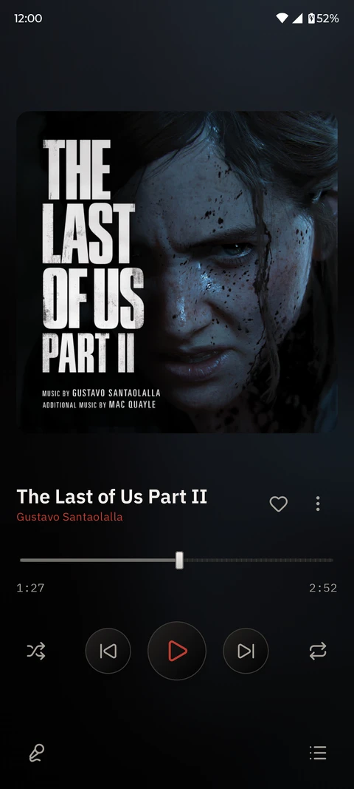
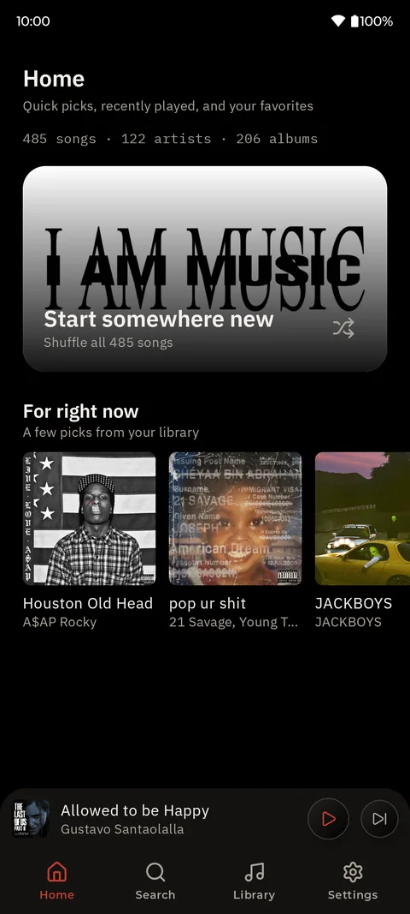
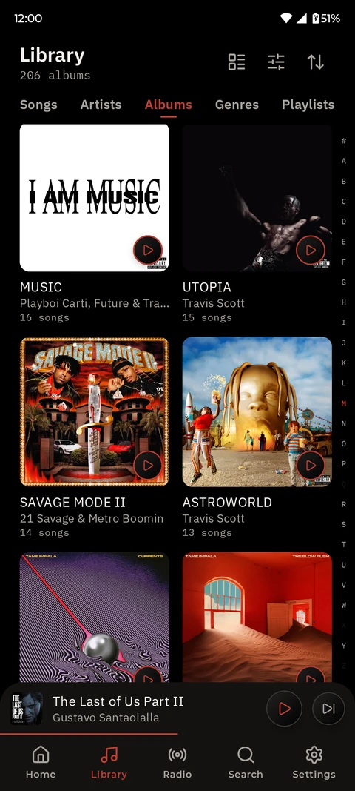
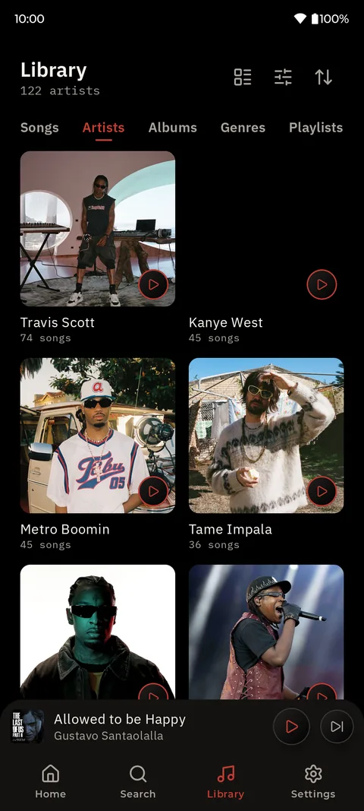
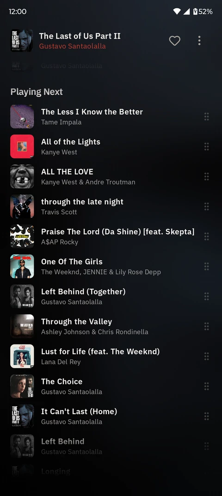
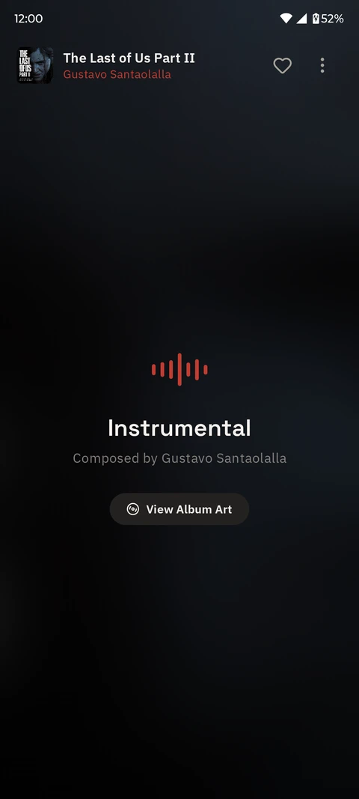

A music player for your own music.
Play the songs on your phone or computer, or stream them from your own server. Free, open source, and no account needed.
Also on Windows and Linux. Free and open source.

A look inside
The screens you'll spend the most time on.





What's on the tape
Everything here is in the app today, and none of it sits behind a subscription.
Side A · Listening
- A1Your local libraryPoint it at your music folders and it reads the tags for you.
- A2Your own serverNavidrome, Jellyfin, Gonic, Airsonic or LMS. Save songs for when you're offline.
- A3Synced lyricsRead from your files or pulled from LRCLIB. Fix the timing yourself if it drifts.
- A4EQ with AutoEqPick your headphones and get a correction curve made for them.
- A5Internet radioThousands of stations. Search by name, genre or country.
- A6In the carAndroid Auto, plus a Drive Mode with big, easy buttons.
Side B · Your stuff
- B1ScrobblingSend your plays to ListenBrainz or Libre.fm.
- B2RewindSee what you played each month, and share it as a poster.
- B3Listening RoomBetaPlay the same song on a few devices across your Wi-Fi.
- B4Home screen widgetPlay, pause and skip without opening the app.
- B5BackupsPlaylists, favourites and settings in one file you can restore anywhere.
- B6Safe loginsServer passwords are encrypted with the Android Keystore.
Also on your computer
Windows and Linux today, with a small hardware player on the way.
CassetteCat for Desktop
Same player, bigger screen. Play your local files, connect to your server, and keep your lyrics and radio stations.
CassetteCat Player
A pocket music player you can build yourself, with an ESP32, a proper DAC, a colour screen and an SD card. The phone app syncs songs to it and doubles as a remote.
No ads. No tracking. No account. Your listening history stays on your phone. Lyrics and artwork lookups are optional, and you can turn each one off. Read the privacy policy
Questions
Can't find what you need? Ask on GitHub.
What is CassetteCat?
A music player for Android, Windows and Linux, made for people who keep their own music. It plays what's on your device, streams from your own Subsonic or Jellyfin server, and shows lyrics that scroll along with the song. It's free and the code is open.
Does it collect any of my data?
No. There's no analytics, no ads and no account to create. Your history and playlists stay on your phone, nothing is sent to us, and server passwords are encrypted on the device.
Which servers can I connect to?
Jellyfin, and anything that speaks the Subsonic API: Navidrome, Gonic, Airsonic, LMS and others. You can browse your library, stream, and keep songs on the phone for offline listening.
Where do the lyrics come from?
First from your files, if they have LRC or ID3 lyrics embedded. If not, CassetteCat looks them up on LRCLIB. If the timing is off, you can fix it in the lyrics editor.
What's the hardware player?
A small open-hardware music player built around an ESP32, with a DAC, a colour screen and an SD card. It's still in progress. The phone app can already send songs to it and control playback over Wi-Fi.
Does it work with Android Auto?
Yes. It works with Android Auto and Android Automotive, so you can pick albums, playlists and radio stations from your car's screen.
Is there an iPhone or Mac version?
Not right now. CassetteCat runs on Android, Windows and Linux.
Is it on F-Droid?
Not yet, the F-Droid listing is still pending. Until then you can grab the APK from GitHub, or add the repository to Obtainium to get updates automatically.
Can I bring my playlists from another player?
Yes. CassetteCat imports M3U and M3U8 playlists, which most players can export. Your music files are picked up by the library scan, so there's nothing else to move.
Thanks
CassetteCat is open source under the GPL-3.0 and lives on GitHub. It's built on top of these projects and services.
Services & Data
- LRCLIB, synced lyrics
- Deezer, artist images
- TheAudioDB, artist images & bios
- Radio Browser, internet radio directory
- GitHub, release update checks
- Wikipedia & Wikimedia, bios (CC BY-SA 4.0)
- MusicBrainz, metadata
- Cover Art Archive, cover scans
- ListenBrainz, open scrobbling
- Libre.fm, GNU FM scrobbling